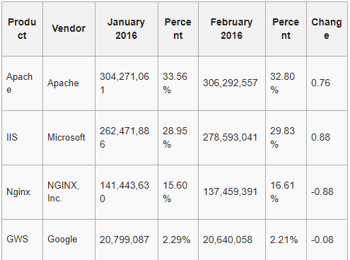

1. Web server là gì?
Web server dịch ra tiếng Việt nghĩa là máy chủ. Web server là máy tính lớn được kết nối với tập hợp mạng máy tính mở rộng. Đây là một dạng máy chủ trên internet mỗi máy chủ là một IP khác nhau và có thể đọc các ngôn ngữ như file *.html… Tóm lại máy chủ là kho để chứa toàn bộ dữ liệu hoạt động trên internet mà nó được giao quyền quản lý.

Phần cứng của Web Server
Web server phải là một máy tính có dung lượng lớn, tốc độ rất cao để có thể lưu trữ vận hành tốt một kho dữ liệu trên internet. Nó sẽ điều hành trơn chu cho một hệ thống máy tính hoạt động trên internet, thông qua các cổng giao tiếp riêng biệt của mỗi máy chủ. Các web server này phải đảm bảo hoạt động liên tục không ngừng nghỉ để duy trì cung cấp dữ liệu cho mạng lưới máy tính của mình
Hệ điều hành của Web Server
Vì Web Server có thể là một máy chủ, hoặc là một phần mềm, nên có thể sử dụng rất nhiều hệ điều hành khác nhau, từ các hệ điều hành nhúng trong các thiết bị (máy in, router), cho tới các hệ điều hành thuộc các họ hệ điều hành khác nhau (ví dụ: Windows, Unix, Linux).
Phần mềm Web Server
Có nhiều phần mềm Web Server đang được sử dụng hiện nay, ví dụ: Apache, Nginx, IIS, GWS.

Nội dung của Website trên Web Server
Nội dung của Website bao gồm toàn bộ tài nguyên giúp cho Website hoạt động. Ví dụ, mã nguồn trang web, hình ảnh, âm thanh, video, cơ sở dữ liệu.
2. Web server có thể là phần cứng hoặc phần mềm, hoặc cả hai.
1. Ở khía cạnh phần cứng, một web server là một máy tính lưu trữ các file thành phần của một website (ví dụ: các tài liệu HTML, các file ảnh, CSS và các file JavaScript) và có thể phân phát chúng tới thiết bị của người dùng cuối (end-user). Nó kết nối tới mạng Internet và có thể truy cập tới thông qua một tên miền giống như mozilla.org.
2. Ở khía cạnh phần mềm, một web server bao gồm một số phần để điều khiển cách người sử dụng web truy cập tới các file được lưu trữ trên một HTTP server(máy chủ HTTP). Một HTTP server là một phần mềm hiểu được các URL (các địa chỉ web) và HTTP (giao thức trình duyệt của bạn sử dụng để xem các trang web).
Ở mức cơ bản nhất, bất cứ khi nào một trình duyệt cần một file được lưu trữ trên một web server, trình duyệt request (yêu cầu) file đó thông qua HTTP. Khi một request tới đúng web server (phần cứng), HTTP server (phần mềm) gửi tài liệu được yêu cầu trở lại, cũng thông qua HTTP.
3. Tìm hiểu về URL
URL đơn giản là một đường dẫn liên kết đến website, tham chiếu tới các tài nguyên trên internet. Để sử dụng các tài nguyên này cần có những đường dẫn chính xác và URL đảm nhận công việc này. URL là viết tắt của thuật ngữ Uniform Resource Locator, dùng để thay thế cho các địa chỉ IP, giúp máy tính có thể giao tiếp với máy chủ, hệ thống server. Các URL giúp xác định cấu trúc của file trên từng website nhất định.
Mục đích sử dụng của URL
URL dùng để định vị địa chỉ site trên Internet, có thể là địa chỉ của một website, một webpage, một wap, wappage hoặc một bài đăng cụ thể nào đó trên Website.
Thành phần cấu trúc của URL
Scheme://domain:port/path?query_string#fragment_id
1. Scheme là giao thức được sử dụng để giao tiếp giữa Web Client (trình duyệt) và máy Web Server. Ví dụ: http, https, ftp, file.
2. Domain là tên miền của Web Server, nơi chứa (các) trang web. Ví dụ: en.wikipedia.org, daotao.edu.vn .
3. Port là cổng được sử dụng để giao tiếp giữa Web Client và Web Server, nếu không chỉ định rõ, thì giá trị của Port sẽ được ngầm hiểu là 80.
4. Path là đường dẫn (thư mục) của trang web hoặc nơi chứa các tài nguyên của một Website tại Web Server. Ví dụ: wiki/Uniform_Resource_Locator, e-learning/ViewCourses.php, C:/Users/Win%208.1/Downloads/openemr/trangweb.html.
5. Ngoài ra, URL cũng có thể chứa chuỗi truy vấn (query string) hoặc fragment_id (một vị trí cụ thể trong một trang web).
Ví dụ URL:
http://legiacong.blogspot.com/2016/10/ngu-ngo-hoc-lam-web-45-co-ban-ve-web.html
https://jandonggun.github.io/LearnWeb/pages/webserver.html
https://quantrimang.com/url-la-gi-158090
https://vinahost.vn/web-server-la-gi.html